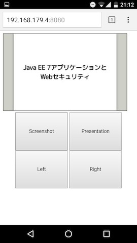

関Javaで使ってたスマホでスライドめくるやつ
今日は関Javaでした！
で、私も発表したんですが……
スマホで操作してる？#kanjava
— opengl-8080 (@opengl_8080) 2016年6月12日
スマホでスライド操作？#kanjava
— セセリ (@serorigundam) 2016年6月12日
うらがみさんのiPhone操作プレゼン、Reveal.jsとRemotes.ioとかかな？#kanjava
— 佐々木和繁うなぎ㌠ (@kazsharp) 2016年6月12日
うらがみさんのスライド操作。
— EOA (@fukamiAO) 2016年6月12日
まさかのアイポンから？！
アプリ自作？？#kanjava
……というツイートを見て、気付いてくれた！ そこに興味持ってくれて嬉しいぞ！ という感じなので、これについて書きます。
スライドめくるやついいなー
いろんな人が発表しているのを見ていると、なんかリモコン的なやつとか指輪っぽいやつでリモートでスライドめくってて「いいなーアレ」と思っていました。
で、自分も発表する時に使いたいなと思ったんですけど、スマホがリモコン的に使えそうだし操作はページ送りできたら良いだけだし作るかー、と。
作ってみた
ざっくり言うと、Webアプリになっていまして、スマホのブラウザでページを開くとWebSocketで通信を開始し、コマンドを送ってページ送りを行っています。
使い方と仕組み
使い方と共にもうちょい詳しく書きます。
まずコードを clone して、ビルドします。
git clone https://github.com/backpaper0/slider.git
cd slider
gradlew build
すると build/libs/slider.jar が出力されます。
スライドを表示する端末でWebアプリを起動します。
java -jar build/libs/slider.jar
なお、サーバーにはUndertowを使っています。 また、mainメソッドの起動にはSpringBootを使っています。
Webアプリが起動するとスマホのブラウザからWebページを開く必要があるのですが、そのために私はスマホでテザリングをしています。 テザリングをして、 ipconfig とか ifconfig で端末のIPアドレスを確認したら http://<ipaddress>:8080/ へスマホでアクセスします。
画面はこんな感じ。
Left と Right でそれぞれ左・右にページを送ります。 その際、スクリーンショットを撮ってブラウザに送ります。 スクリーンショットは Screenshot ボタンでも取得できます。 そして Presentation ですが、これは私が利用している remark というスライドツールのプレゼンテーションモードを切り替えるために使います。
これらの実現方法ですが、まず Screenshot や Left のボタンを押すとWebSocketでサーバーにコマンドを送ります。 コマンドと言っても SCREENSHOT や LEFT といった単純な文字列です。
サーバーではコマンドを受け取ると Robotクラス を利用して スクリーンショットを撮ったり 、 「左ボタンを押す」というシステム入力イベントを発生させたり します。 これでスライドのページ送りができました。 なお、スクリーンショットはBase64エンコードしてData URIにしてブラウザに送っています。 ブラウザ側ではそれをそのままCanvasに書き出しています。
欲しいものは作ればいいや
仕組みとしては以上でして、まあ説明してみると大したことはしていないんですが、これまでプライベートコーディングではフレームワークを試したりサンプルコードばかり書き捨てていたので、改めて「欲しいと思ったものを自分でも作れるもんだなー」としみじみ思いました。 欲しけりゃ作ろ、と思うようになってきたのは、この数年で出会った何人かのエンジニアのお陰です。 名前を出すのは照れくさいので出しませんが、本当に尊敬しています。
まとめ
- 作ってはみたものの、使う機会を逃しており今回が初の実践でしたが、なかなか上手く行って良かった！
- 何人かの方に気付いて貰えて嬉しかった！(「機会があったら使わせて欲しい」とまで言ってくれた方も居た！)
使いながらもっと便利になるようにちまちまメンテしたい所存です。